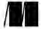

For online information and ordering of this and other Manning books, please visit www.manning.com. The publisher offers discounts on this book when ordered in quantity. For more information, please contact
Special Sales Department Manning Publications Co. 20 Baldwin Road, PO Box 761 Shelter Island, NY 11964 Email: orders@manning.com
©2016 by Manning Publications Co. All rights reserved.
No part of this publication may be reproduced, stored in a retrieval system, or transmitted, in any form or by means electronic, mechanical, photocopying, or otherwise, without prior written permission of the publisher.
Many of the designations used by manufacturers and sellers to distinguish their products are claimed as trademarks. Where those designations appear in the book, and Manning Publications was aware of a trademark claim, the designations have been printed in initial caps or all caps.
Recognizing the importance of preserving what has been written, it is Manning’s policy to have the books we publish printed on acid-free paper, and we exert our best efforts to that end. Recognizing also our responsibility to conserve the resources of our planet, Manning books are printed on paper that is at least 15 percent recycled and processed without the use of elemental chlorine.
 |
Manning Publications Co. 20 Baldwin Road Shelter Island, NY 11964 |
Development editor: Jennifer Stout Technical development editor: Damien White Project manager: Tiffany Taylor Copyeditor: Tiffany Taylor Technical proofreader: Jean-François Morin Typesetter: Leslie Haimes Cover and interior design: Leslie Haimes Illustrations by the author
ISBN: 9781617292231
Printed in the United States of America
1 2 3 4 5 6 7 8 9 10 – EBM – 21 20 19 18 17 16
For my parents, Sangeeta and Yogesh